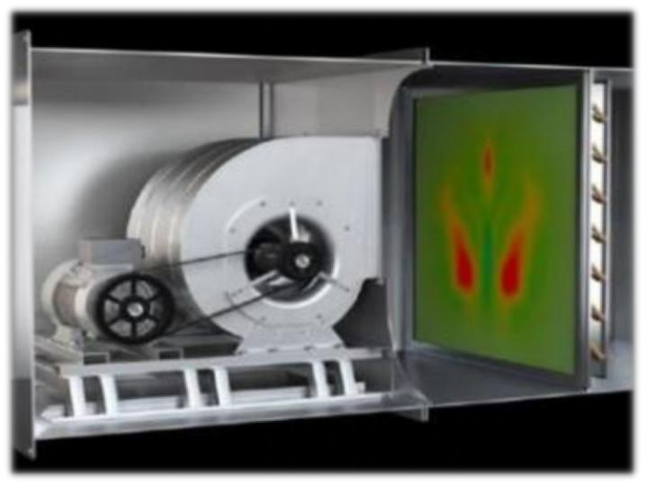

中央空调系统的用电，主要花在哪里
中央空调系统的用电主要集中在风机、水泵与冷却塔等输配设备。这类设备长期连续运行，若仍采用皮带传动与工频运行方式，传动损耗与调节方式本身就会消耗大量电能。理清用电结构，是确定改造方向的第一步。
常见的问题有三类：皮带传动存在机械损耗，效率随使用时间下降；设备按工频恒速运行，难以匹配随时间与季节变化的实际负荷；分项计量缺失，导致节能效果无法量化，也缺少持续改善的依据。

从调研到核正：改造的五个步骤
中央空调节能改造不是简单更换设备，而是依照用能现状形成针对性方案，再用数据验证结果。流程依次为调研、测试、方案、实施与核正。
调研阶段了解系统构成与用能结构；测试阶段实测能耗、效率与运行参数；方案阶段按工况形成技改方案；实施阶段组织施工、安装与系统调试；核正阶段对比数据核算节能率，并在后续运维中持续跟踪效果。
三类常见改造方向
其一，空调末端风机。以一体式直联风机替代皮带风机，静压效率由约 40% 提升至 68%。其二，冷却塔风机，采用一体式直联 EC 风机后，效率由传统 29% 提升至 54%。其三，智能控制与计量，通过变频调速、实时功率监控与 485 通讯，接入能源管理系统统一管理。

一体式直联风机集成定制变频器、高效永磁同步电机与双曲面机翼型风叶，具备变频调速、过流与过热保护、软启动、实时功率监控与通讯功能，并可选配振动检测。相关技术细节见节能风机技改。
深圳某半导体有限公司：19 个月收回投资
该企业实施节能风机技改后，风机节能率平均 39.3%，整体运行成本降低 25% 以上，19 个月收回投资成本。这一结果是在改造前后同一工况下对比测试得出，具体周期随机组数量、运行时长与电价而不同。
更多项目数据可查看项目案例；如需了解覆盖多类设备的服务范围，可查看业务领域。